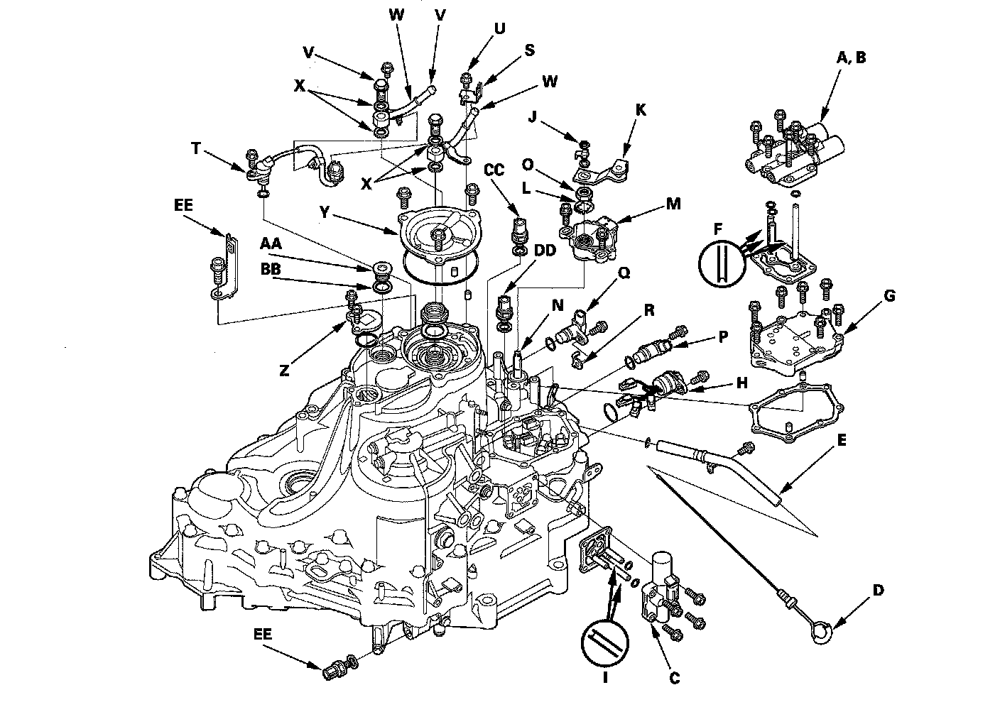

Transmission Disassembly
Transmission DisassemblySpecial Tools Required
Mainshaft holder set 07GAB-PF50101
1. Remove the ATF dipstick (D) and the dipstick tube (E).

2. Remove A/T clutch pressure control solenoid valve A and B (six bolts) ATF feed pipes (F) (three) O-rings (three) and gasket.
3. Remove the solenoid valve cover (G) (seven bolts) dowel pins (two) and gasket.
4. Disconnect the solenoid valve connectors, then remove the solenoid harness connector (H).
5. Remove A/T clutch pressure control solenoid valve C (four bolts) ATF feed pipes (I) (three) O-rings (two) and gasket.
6. Pry the lock tab of the lock washer (J) on the control lever (K) and remove the nut, lock washer, spring washer, and control lever.
7. Pry up the lock tabs of the lock washer (K) on the transmission range switch (L) hold the selector control shaft (M) with a 6.0 mm wrench, and loosen the locknut (N).
8. Remove the locknut and lock washer, then remove the transmission range switch (two bolts).
9. Remove the input shaft (mainshaft) speed sensor (O) output shaft (countershaft) speed sensor (P) and sensor washer (Q).
10. Remove the ATF temperature sensor connector from the connector bracket (R) and the harness clamp from the clamp bracket, then remove the ATF temperature sensor (S).
11. Remove the connector bracket (R) and 6.0 mm bolt (T) then remove the line bolts (U) ATF cooler lines (V) and sealing washers (W).
12. Remove the end cover (X) (three bolts) snap ring cap (Y) (two bolts) sealing plug (Z) and washer (AA).
13. Remove the 3rd clutch transmission fluid pressure switch (BB) and sealing washer.
14. Remove the 4th clutch transmission fluid pressure switch (CC) and sealing washer.
15. Remove the 2nd clutch transmission fluid pressure switch (DD) and sealing washer.
16. Remove the transmission ground terminal (EE).
17. Slip the mainshaft holder onto the mainshaft.
18. Cut the lock tab (A) of the mainshaft locknut (B) using a chisel (C).
NOTE: Keep all of the chiseled particles out of the transmission.
19. Remove the locknut (A) from the mainshaft (B).
20. Pry the lock washer (C) and remove it.
21. Remove the transmission housing mounting bolts (A) (23 bolts) special bolt (B) transmission hanger (C) and ground terminals bracket (D).
22. While expanding the snap ring of the countershaft bearing using the snap ring pliers, lift the transmission housing.
23. Release the pliers, and remove the transmission housing (E) two dowel pins (F) and gasket.
24. Remove the ATF feed pipes (G) (four) from the accumulator body.
25. Remove the ATF feed pipes (H) (two) from the torque converter housing.
26. Remove the mainshaft holder from the mainshaft.
27. Pry the lock tab of the lock washer (I) on the shift fork (J) then remove the bolt and lock washer.
28. Unlock the detent spring from the detent arm.
29. Remove the park pawl stop (K) park pawl (L) pawl spring (M) and pawl shaft (N).
30. Remove the mainshaft (O) countershaft (P) shift fork (J) and secondary shaft (Q) together, and remove the needle bearing (R) from the torque converter housing.
31. Remove the selector control shaft and park lever link (S).
32. Remove the baffle plate (T).
33. Remove the differential assembly (U).
34. Remove the transfer output shaft (V).
35. Remove the baffle plate (W).
36. Remove the intermediary shaft (X).
37. Remove the ATF strainer (A) (one bolt).
38. Remove the accumulator body (B) (11 bolts) dowel pins (two) detent arm (C) arm shaft (D) and separator plate (E).
39. Remove the ATF feed pipe (F) from the main valve body.
40. Remove the secondary valve body (G) (one bolt) dowel pins (two) and separator plate (H). Do not let the check balls (I) (two) fall out.
41. Remove the regulator valve body (J) (seven bolts) stator shaft (K) stator shaft stop (L) dowel pins (two) and separator plate (M).
42. Remove the main valve body (N) (8 mm: three bolts, 6 mm: seven bolts). Do not let the lubrication check valve (O) fall out.
43. Remove the torque converter check valve (P) and valve spring (Q).
44. Remove the ATF pump driven gear shaft (R) then remove the ATF pump gears (S).
45. Remove the dowel pins (two) and main separator plate (T).
46. Remove the ATF passage pipe (U).
47. Remove the ATF magnet (V) clean it, then reinstall.
48. Remove the O-ring (W) from the ATF strainer, and replace the new O-ring when reassembling the transmission.
49. Remove the O-ring (X) from the stator shaft, and replace the new O-ring when reassembling the transmission.
50. Clean the inlet opening (A) of the ATF strainer (B) thoroughly with compressed air, then check that it is good condition and that inlet opening is not clogged.
51. Test the ATF strainer by pouring clean ATF through the inlet opening, and replace if it is clogged or damaged.